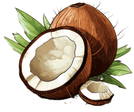

Coco Peat, also known as coir pith or coconut peat, is a natural byproduct of coconut husks, specifically designed to serve as an effective growing medium. As an eco-friendly alternative to traditional peat moss, Coco Peat boasts excellent water retention, aeration, and drainage properties, making it an ideal choice for gardening, horticulture, and hydroponics.
It not only promotes healthy root growth by maintaining a balanced moisture level but also improves soil structure, leading to more productive plants. Coco Peat is also naturally resistant to pests and diseases, providing an organic and sustainable solution for your growing needs.
Coco Peat, also known as coir pith or coconut peat, is a natural byproduct of coconut husks, specifically designed to serve as an effective growing medium. As an eco-friendly alternative to traditional peat moss, Coco Peat boasts excellent water retention, aeration, and drainage properties, making it an ideal choice for gardening, horticulture, and hydroponics.
It not only promotes healthy root growth by maintaining a balanced moisture level but also improves soil structure, leading to more productive plants. Coco Peat is also naturally resistant to pests and diseases, providing an organic and sustainable solution for your growing needs.
Is carefully processed to ensure it meets the highest standards of quality and consistency. Whether you're a professional grower or a gardening enthusiast, our Coco Peat is the perfect medium to enhance your plant's growth and yield.
You can order it by contacting the following email: kianbuanajaya@gmail.com